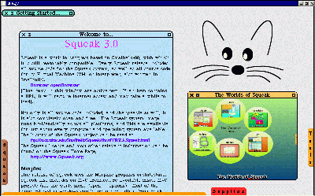
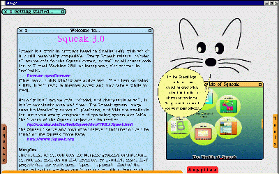
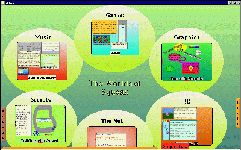
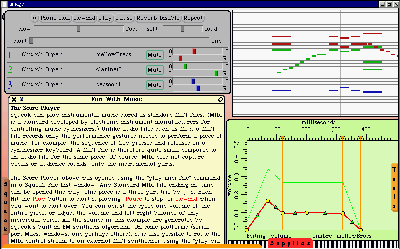

![[ Prev ]](../gx/navbar/prev.jpg)
![[ Table of Contents ]](../gx/navbar/toc.jpg)
![[ Front Page ]](../gx/navbar/frontpage.jpg)
![[ Talkback ]](../gx/navbar/talkback.jpg)
![[ FAQ ]](./../gx/navbar/faq.jpg)
![[ Next ]](../gx/navbar/next.jpg)

"Linux Gazette...making Linux just a little more fun!"
Abstract
For those who haven't read the previous articles,
be sure to read the
statement of purpose first. This month, we're going to
discuss OO thinking. For those looking to read the whole series locally
or information about upcoming articles, you can check
the MST page. For those looking for further information
on learning Squeak, here are some
good resources.
This is the last planned article for this series.
The reader interest has been high enough for me to continue with the next
series, but unfortunately my available writing time has quickly dwindled
:-( as my wife nears her due date :-) So this will be the last regular
article at least for a while.
Quote of the day
Reason never changed a man's opinion which by reason he never acquired.
-- Mark Twain
OO Thinking
If you're just getting into OO from another programming
background, you'll soon realize that it requires a change in the way that
you think, the way you approach problems, and (IMHO) how much fun you're
having. This month, we go over some things to keep in mind when doing
OO programming.
Breaking Linear Thinking
This is the first hurdle I've seen many people trip
over. They're so used to programs with a main() routine of some sort,
that when they first dip their toes into the Smalltalk pool they're frightened
off by not being able to find a linear beginning, middle, and end of something.
Realize that Smalltalk is about working with a group of collaborating objects.
To be sure, you will need some entry point to your code/application, however
it likely be in the form of opening your starting window, then saving/stripping
your image.
Thinking of problems in terms of nouns and verbs
(objects and responsibilities) is a more natural way of thinking, and often
leads to a much different decomposition of the problem than functional
decomposition. Try to identify which objects are inherit to the problem,
which objects need to involved to help out, then think of the most basic
responsibilities and distribute them appropriately across the objects.
This leads us to our next item: OO programming
lends itself well to iterative development. It's a natural activity
to define the basic objects, then start adding basic relationships and
responsibilities. If you find something doesn't fit right, then shift
the responsibility elsewhere. Flesh out your objects and responsibilities
over time.
Try to use short methods to help maximize reuse
and maintainabilty. If you find yourself writing 100 line methods,
then you're still thinking linearly. The average method length varies
depending on whom you ask, but it should be short - somewhere around 8
statements or so. Of course, there's always exceptions to any rule
- this is just a rule of thumb.
Decision Making vs Commanding
This is what I often think is the most fundamental difference
between OO programming and procedural programming. In procedural
programming it's common to do things in terms of decision making.
You do things like:
-
if this, then that, else that
-
For example, if data is an integer and user input is a float, then convert
the float to an integer to add
-
for i = 1 to i = maxRange do this unless i > maxBounds, and if early
break condition is met then break out of loop
-
1 + 2 * 3 = ?
-
This example uses operator precedence, which is something that most languages
have. The statement is evaluated as: (1 + (2 * 3)) = 7. But
to determine precedence the language needs to make a decision which
operator to precede.
A common problem that arises from decision making programming
is that you have similar decision making being done in several parts of
a program. Then when requirements or needs inevitably change, there
are many different spots that you need to update/modify your program to
update all the decision making spots.
In OO programming, it's more common to do things
in terms of commanding. You command (or ask if you're polite) objects
to do things. If the object shouldn't do something, or should do
something differently, then it should know that. Since you ask different
objects the same thing, and they respond as each of them should, there's
no decision making. You do things like:
-
object doSomething
-
For example, it doesn't matter that you're adding a float to an int, the
float object knows how to add floats to itself, how to add ints to itself,
how to add fractions to itself.
-
aCollection do: [:eachElement | eachElement doSomething]
-
Notice how there are no bounds checking - a collection object already knows
how to do that and does it for you.
-
1 + 2 * 3 = ?
-
In this example, remember integers are objects too in Smalltalk (part of
the pure OO nature of Smalltalk). So we're asking the object 1 to
add itself to 2, then the resulting object to multiply itself by 3.
Hence, the statement is evaluated as: ((1 + 2) * 3) = 9.
-
As a side note, it's funny how often I've seen some of my C++ or Java coworkers
flee from Smalltalk because this doesn't make sense to them. They
still haven't entirely made the shift to OO thinking.
Don't Sweat the Details
I once heard Alan Knight remark that you know somebody
is starting to get Smalltalk if they answer the question: "How does
Transcript show: 'HELLO WORLD' work?" with: "I don't care".
A common theme among Smalltalk newbies is a need to know exactly how everything
works, and step through all the methods of the objects from the library
that they use. This is related to linear thinking, in that you need
to understand how a linear path flows to determine how it broke down the
road. If you find yourself sweating the details of the class library,
then you're probably still in linear thinking mode.
A related theme is that Smalltalk lends itself to
top-down coding. Put off work as long as possible and put off decisions
as long as possible - abstract and stub out reponsibilities if you can.
It's a powerful feeling to define even a trivial system that works, then
keep it working as you add real meat to it. You're most often in
a state of things working.
Simplification by Encapsulation
Try and group data together with appropriate operations
in an object. If you're acting directly on an object's data in some
manner, then you're breaking encapsulation. If you're doing something
like: anObject aDataAttribute aPartOfAttribute doSomething, then
you're breaking encapsulation.
A nice example of encapsulation is the looping noted
above. The collection class knows how many elements it has, and how
to loop over its elements, and you're not concerned with bounds checking
nor should you be.
Reuse
Opportunities for reuse abound, and not just from the usual place of inheritence
...through the class library
Before coding something, browse the class library to
see if it's already been done for you. Reinventing the wheel is definately
non-OO and wastes time.
Another rule of thumb for knowing when you're getting
Smalltalk is the proportion of time you spend browsing the class library
to the proportion of time you spend coding. As you gain experience
and familiarity with the library, your proportion of time will go down,
but for a beginner you should expect to spend the majority of your time
browsing the library and the minority of your time coding.
An appropriate remark I once heard (sorry, don't
remember the source), during a LOC metrics flame war is that Smalltalkers
should be measured by the LOC they don't write, as they're saving
time and maintentance costs by reusing the class library.
...through goodies
Smalltalk has a rich history and a great user community.
There may be a freeware or opensource goodie out there that will satisfy
your needs. Have a look at the UIUC
repository, or search the web or ask the newsgroups for goodies.
...by approrpiate responsibilities
If it isn't your reponsibility, then don't do it (or
redo it). Conversely, avoid responsibilities as much as possible
(only take the appropriate responsibilities). By trying to stick
to only appropriate responsibilities, then you're more likely to reuse
responsibilities elsewhere in the system.
For example, don't have the responsibility to login
to your application in your client's login GUI (a bad practice in general),
if you later have a web GUI, then you need to either copy the login logic
to your web GUI, or factor out the login code to a reusable object.
...through inheritence
Now we finally get to reuse through inheritence.
I leave this for last, as reuse through inheritence has been (IMHO) overhyped
and often overabused with needlessly deep class hierarchies that complicate
maintenance.
For example, if you're writing a hospital system
you'd probably want to reuse a Person's characteristics of firstName,
lastName,
and socialSecurityNumber by making subclasses of
Doctor and
Patient.
Distributing responsibilities
Watch out for bloated parts of system - you can see
this if you're drawing your system out and your diagram looks like an octopus.
This is a sign that there are too many responsibilities on one object,
and that object is going to get harder to maintain as it bloats.
You should try and have groups of peer objects collaborating.
Another warning sign is using a 'manager' object.
Again, there are perfectly good times and uses for a manager object, and
it can be difficult to determine if you're abusing a manager object.
I like to use a rule of thumb I heard from Alan Knight: object managers
should be like real world managers: they should not do any real work
- they should facilitate or manage interactions between other objects.
A Sweet Squeak
This month's sweet squeak is the release of Squeak 3.0! :-) To be
generic as possible, this description covers the scenario where you want
to run Squeak in Windoze or Linux. For this simple path install,
on Linux you will need root priviledges. (Note: you can install
without root privilidges if you're familiar with updating your paths, I'm
not going to cover that topic in this simple guide)
Step 1: Downloading Squeak 3.0
Go to the FTP site: ftp://st.cs.uiuc.edu/pub/Smalltalk/Squeak/3.0
and download:
-
Squeak3.0-win.zip, includes:
-
Squeak.exe, the virtual machine (only good for Windoze, we'll need
to compile a VM for linux)
-
Squeak3.0.image, (can use this on linux or Windoze)
-
SqueakV3.sources, (can use this on linux or Windoze)
-
Squeak-3.0pre2.tar.gz
-
Source files for compiling the linux VM
Step 2: Set a base directory to run squeak from
Assumes your Windoze mount point is /windoze, change for your system.
Note: if you don't have/want to run dual boot, just change
your install location to be whatever you desire, for example: ~myuserid/squeak3,
and delete the unnecessary files: NPSqueak.dll, Squeak.exe, SqueakFFIPrims.dll.
Make a /windoze/squeak3 directory
Unzip the Squeak3.1-win.zip file into a /windoze/squeak3
directory.
Step 3: Installing VM for linux
This is a very easy thing to do - even if you've never programmed
or compiled anything in your life before. Here are the steps:
-
Unzip Squeak-3.0pre2.tar.gz to wherever (be sure to unzip with directories,
this unzips into a Squeak-3.0 directory)
-
cd to where you unzipped the sources. (The BUILD.UnixSqueak
is a quick-n-easy guide from which these steps were condensed from)
-
mkdir build
-
cd build
-
../src/unix/configure --bindir="/windoze/squeak3"
-
make
-
make install (NOTE: here is where you'll need root privilidges
with the default install, as stuff is copied to /usr/lib, /usr/man, etc)
-
Here, you're going to get a couple of errors (unless you're installing
to a Linux location), as you can't make links on a Windoze file system
-
Copy the referenced files to your /windoze/squeak3 directory:
-
cp /usr/lib/squeak/3.0/squeak /windoze/squeak3
-
cp /usr/lib/squeak/3.0/inisqueak /windoze/squeak3
Step 4: Start Squeak :-)
-
cd /windoze/squeak3
-
squeak Squeak3.0final.image
...I'll leave starting up Squeak in Windoze as an exercise for the reader
;-)
Quick tour
When I started up the image for the first time, I was
pleasently surprised that the default GUI to come up is the newer morphic
GUI (as opposed to the older MVC GUI that was mentioned in Article 1).
For the read-along folks, you'll see (click on the below half size images
for full size images):
The entry screen. The Squeak logo in the top right is an xeyes
type of app, where the eyes follow the mouse.

If you put the mouse curor over the logo, you'll notice the pop-up balloon
help is enabled.

If you click on the project at the bottom right of the screen, it'll
zoom to full screen size as you enter it.

And finally, lets click on the music project to have a look.

Looking forward
Alas, there will be no immediate looking forward due
to my time constraints. The next series I was planning covers
some basic programming basics like: unit testing (SUnit), source
code management (change sets and SCAN), an object tour of commonly used
objects, control structures, and Squeaklets.
In the meantime though, I highly recommend
downloading v3.0 of Squeak (noted below) and trying out the STP goodies
as your first goodie exploration. They're available from: http://www.create.ucsb.edu/squeak/STP12.html
I've enjoyed learning about Squeak over the past
few months, and I hope you've enjoyed the series.
Smalltalk Code
Somebody pointed out to me that the ScopedBrowser used in Article 4 doesn't
work properly in Squeak v3.0, so here's an updated
version.
Note: I noticed that SUnit is now included as part of the base
image now, so I've included some programmatic unit tests. After loading
the code, if you wish to run the unit tests, do: TestModel openAsMorph,
then click the Run button. You'll notice 8 windows pop up
and close, and there shouldn't be any errors listed in the error pane.
Copyright © 2001, Jason Steffler.
Copying license http://www.linuxgazette.net/copying.html
Published in Issue 65 of Linux Gazette, April 2001


{kind=link}
{kind=link}
{kind=link}
{kind=link}